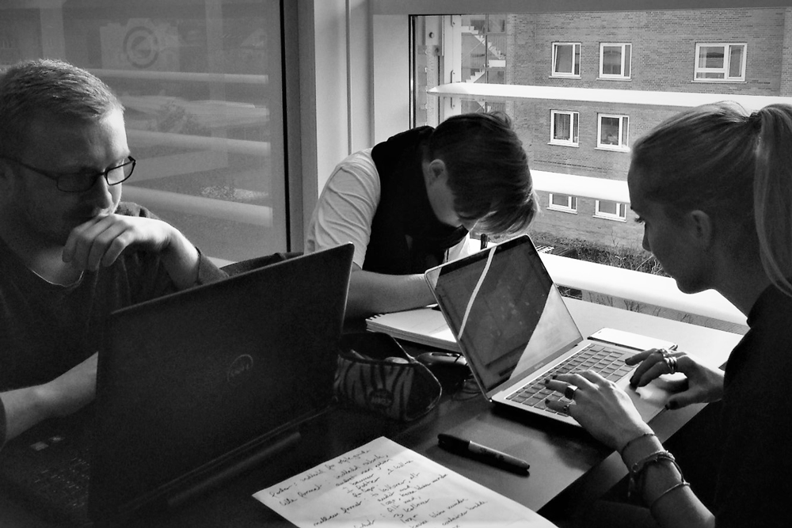
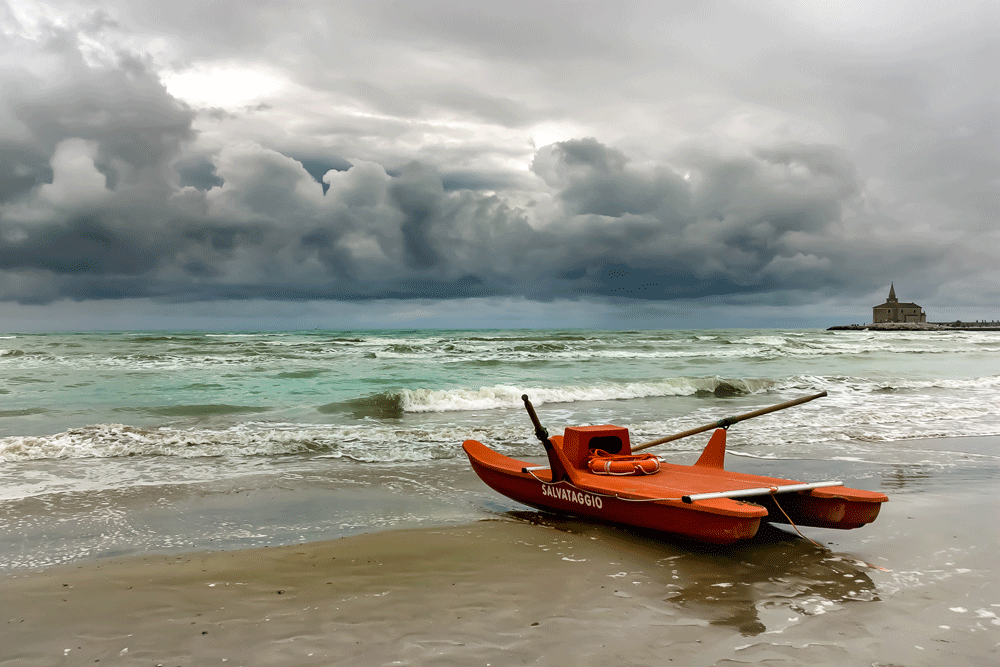
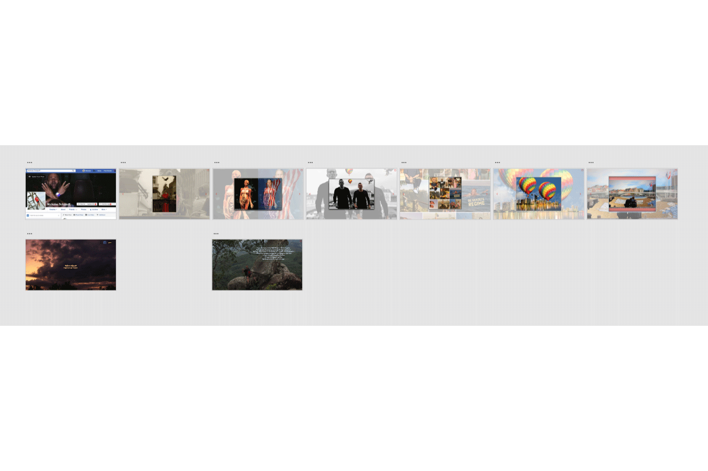

Projects:
Sweetbot ⇀Build you own app ⇀Dream your portfolio ⇀Build your portfolio ⇀Current version of the portfolioSweetbot
Sweetbot was the first group project we were introduced to first semester. The focus was to introduce group cooperation, version control via GitHub, and the implecation of information architecture in order to get a sense of the market.
In this project, we were also introduced to a styleguide produced by the fictious company Sweetbot.The styleguide was specific, and it was a part of the challenge to follow it to a tee. There were specific guidelines about, logo –size and design–as well as fonts and the company mission.
From this satrting point we created a Creative brief within my group, in order to organize the information we had recieved from the customer. Which was roughly that they wanted a Dansish website to represent their company of webdesign, and they also wanted a suggestion of a direction for their startup sister company Hotbot.
We then brainstormed and created a moodboard to get ideas for how we wanted to approach the project. This gave way to a breakdown of the workload, and organization of time, effectively becoming a Work and Product breakdown structure. We had a scope and goals we wanted to acheive within the alloted time. We also created twp personas in order to have a mental image of who we were making this website for.
After having created spliting the work allowing the different members of the group to have a shot at what they were unpracticed at, we focused on creating icons and wireframes, as well as a styeltile, in order to pave the way for the coding, which we new was the most time consuming part of the project.
We had problems with GitHub version control, and were forced to rely on other file sharing programs to share our work.
We were happy with the final design, which was responsive to different screen-widths, as was a requirement. We also met our deadlines and delivered the finished product in good time.
As a finishing touch we ran some user tests on the final product. These Think aloud
tests, gave us great feedback, and we went back and changed some of the points of interests from the tests
Projects:
Sweetbot ⇀Build you own app ⇀Dream your portfolio ⇀Build your portfolio ⇀Current version of the portfolioBuild your own app
The Build your own app
project was one of the first projects in which a full Information architecture was expected.
The outline of the project was to choose one of three topics and create a prototype app, using icons we have created ourselves and full user testing and information achitecture. I chose the weather topic, and set out to create my app prototype.
By this time I had developed a method, and this was starting with a Brainstorm and moodboard followed by a creative brief. Once these parts are done they function as an anchor for the rest of the project. This was followed by analysing the target gruop and making a couple of target personas. This led me to realize that I could create an app which catered to my old kajak rowing club, and the issues I knew we all had at the time with weather information.
In order to take full advantage of user testing, already from the beginning I posted to my old rowing club on Facebook, asking for information about what they felt they needed out of a weather app. I took this information and used it to give direction to my app. I used the same group to give me feedback on the finished project, as well as doing some think aloud
tests in person.
I then went on to create a moodboard, and quickly found that I wanted to have some bright colors bringing contrast and importance to certain functions in the app. I continued to create wireframes that led to a styletile, both for mobile and tablet sizes, as was specified in the project desciption. Finally creating the sitemap after analysing information that I had gathered by three preliminary card sorts.
I used Adobe XD to create the protoype, and uploaded it to alow my former rowing club to give it a whirl and get back to me with comments. This as well as two think aloud
tests that I performed, gave me a clear view of some shortcomings in the design. I corrected these flaws before handing in the project. As a final note I recieved a remark from a teacher about the design of the logo, and I have afterwards recreated a new design, which can be seen in the gallery below.
Projects:
Sweetbot ⇀Build you own app ⇀Dream your portfolio ⇀Build your portfolio ⇀Current version of the portfolioDream your portfolio
Online rapport PrototypeThe portfolio project has spans over the course of the first semester, and was split into three parts. In the beginning of the semester we were asked to use our recently aquired knowledge of Adobe Xd, and create a prototype of our ideal portfolio. There was no user testing and little information architecture at this early stage, and the purpose was to introduce us to the idea of this work portfolio. I was inspired by a portfolio I saw online by a very know designer, in whicg the text was very minimal, and the images, design and animations did all the talking. I decided to go this way, and was visually pleased by the result in XD. I recieved a remark from a teacher, that people with very known names don't have to advertise themselves, and that I should include some introduction of myself in further versions, from the very first page.
Image gallery
Projects:
Sweetbot⇀Build you own app⇀Dream your portfolio⇀Build your portfolio⇀Current version of the portfolioBuild your portfolio
Online version Github code Psychology of color Adobe color wheelSecond section of the portfolio process came after initial CSS and Html studies. The goal was now to incorperate these skills in an online version of portfolio we had dreamt up, in an earlier project. This was an interesting process, as my skills in coding an online solution were somewhat lacking in comparison to what I had dreamt up earlier. I also used expierience from a previous part of the course, to create some icons for the protfolio, using Adobe illustrator.
I started out trying to use code that we had learned in the final lessons up till the project. This included CSS Flexbox. I worked the whole weekend but ended up abandoning the project, becuase I could not understand what I was doing, and was finding more and more intricate sollutions to make things look right on the screen. I decided to hole myself up, and use only a HTML structure, with the basic CSS styling that I know I could understand, which was basically absolute and relative positioning, as well as sizing images and boxes. I found confidence in using code I could fathom, and finished the second atempt at the project before time.
Color wise I decided to use an online programAdobe color that could help find palettes by matching colors that were complementary to each other on a color wheel. Also allowing me to control the saturation, brightness and color during the process. The colors I chose after reading a web article about the psychology of color, i.e. what the different colors represent to our subconsious. I went with a purple which is a royal color, but can also represent imagination, adn creativity. The other colors I chose, were complementary of this purple color, and I tried to keep that balance through out the site.
Finally this was my first expierience uploading code to a domaine. We used Dreamweaver to do this.
Projects:
Sweetbot ⇀Build you own app ⇀Dream your portfolio ⇀Build your portfolio ⇀Current version of the portfolioFinal rebuild of the portfolio
This is the current version of the portfolio, and what you are looking at right now. Let me walk you through the process. User testing of the original Portfolio was performed in order to narrow in on its faults. The user was one Daniel Jensen, and is what he pointed out for each page. I also asked him to do an open card sort, with about 25 tasks I had created for a fictional website.
The next step was a brainstorm of the project which led on to a moodboard. These two items I gave myself a short time to do, in order to keep the flow fresh and inspired. The colors from my moodboard have been incorperated in the final design, as well as several ideas I had from my brainstorm. I analysed the results of the user test, and also tried to respect these observations, while planning the next step.
I brokedown the steps that I saw as necsessary to complete this project. this process is known as Product Breakdown Structure. Once I had completed this on paper I plotted it into a diagram, that I could use for reference. I used the breakdown to plan the time I would have to put aside to create this portfolio. This is called making a Work Breakdown Structure. I plotted this into an excel sheet, and also commited it to memory in order to keep myself on track chronologically.
I then sat down and created wireframes and a sitemap for the portfolio. I used pencil and paper, in order to focus on the design process and not get bogged down with tech issues. I drew a sketch of all pages, in all three sizes that I wanted to represent. Mobile, Tablet and Desktop.
Once these sketches were in place I documented them, for later use, and them I used their design, for making a mockup, which in this case was one page in which I still in pencil measured and marked the beginings of HTML and CSS box creation so that I could have a template to start my coding on later. I also used colered pencils on this template in order to create a styletile, which also documents the colors I wanted to use, in RGB and Hex-code. For the color scheme I was inspired by the Ghanaian national flag. The country my grandfather comes from.
Once the mockup and styletile where in place, I was ready to embark on coding the venture. So far I was on schedual